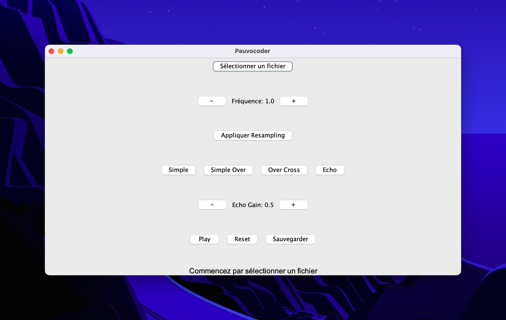

Mehdi LAFAY
Portfolio BUT Informatique - Première année
Étudiant en première année de BUT Informatique, ce portfolio présente l'analyse de deux compétences clés que j'ai développées au cours du premier semestre de ma formation. Chaque compétence est illustrée par des traces concrètes issues de mes Situations d'Apprentissage et d'Évaluation (SAÉ) réalisées durant ce semestre.
Compétences analysées
Méthodologie d'analyse
Pour chaque compétence, j'ai structuré mon analyse selon les axes suivants :
- Définition : Référentiel officiel de la compétence
- Savoirs et savoir-faire : Identification des connaissances requises
- Mise en œuvre : Application concrète lors des SAÉ
- Traces : Illustrations pertinentes avec justifications
- Réflexion critique : Niveau atteint et perspectives
Compétence 1 : Réaliser un développement d'application
Définition de la compétence
Réaliser un développement d'application consiste à élaborer et implémenter des solutions logicielles en réponse à un besoin exprimé par un client ou utilisateur. Cette compétence implique la maîtrise des langages de programmation, la conception d'architectures logicielles appropriées, et l'application de méthodologies de développement rigoureuses.
Cette compétence est fondamentale dans la formation BUT Informatique car elle constitue le cœur du métier de développeur. Elle permet de transformer des spécifications fonctionnelles en applications opérationnelles, en respectant les contraintes techniques et les bonnes pratiques de développement.
Savoirs et savoir-faire requis
Savoirs théoriques
- Programmation orientée objet : Encapsulation, héritage, polymorphisme
- Algorithmique avancée : Structures de données, complexité, optimisation
- Traitement du signal numérique : Échantillonnage, ré-échantillonnage, corrélation
- Interfaces utilisateur : Conception d'IHM, gestion des événements
- Gestion d'erreurs : Validation, exceptions, robustesse
Savoir-faire pratiques
- Implémentation d'algorithmes complexes : Traduction de concepts mathématiques en code
- Conception d'interfaces : Développement d'IHM ergonomiques et fonctionnelles
- Optimisation de code : Amélioration des performances et de la qualité
- Tests et validation : Création de jeux d'essais, traces d'exécution
- Documentation technique : Rédaction de spécifications et guides utilisateur
Mise en œuvre lors des SAÉ
SAÉ S1.01 : Implémentation d'un besoin client - Vocodeur du Pauvre
Contexte du projet :
Développement en binôme d'un programme de traitement audio permettant de modifier la hauteur de la voix sans altérer le débit de parole. Le projet devait respecter des spécifications techniques strictes et inclure une interface graphique complète. Collaboration avec Aylan HADDOUCHI (Groupe S1.B1).
Période de réalisation :
- Période : Novembre-décembre 2024
- Rendu : Dimanche 22 décembre 2024
- Soutenance : Jeudi 9 janvier 2025
- Durée du projet : 8 semaines
Voir le code source sur GitHub
Application de la compétence :
La réalisation du Vocodeur du Pauvre a nécessité la mobilisation complète de cette compétence : conception d'algorithmes de traitement du signal, implémentation de trois versions optimisées successivement, développement d'une interface graphique Swing, et création d'un système complet de tests et validation. Le défi principal était de traduire des concepts mathématiques complexes en code Java performant et maintenable.
Savoirs mobilisés :
| Savoir/Savoir-faire | Situation d'application | Résultat obtenu |
|---|---|---|
| Algorithmique avancée | Implémentation des algorithmes de ré-échantillonnage et dilatation temporelle | 3 versions d'algorithmes avec qualité croissante |
| Interface utilisateur Swing | Développement de PauvocoderInterface.java avec contrôles temps réel | Interface complète et ergonomique |
| Traitement de données audio | Manipulation de tableaux de samples 44.1kHz | Support WAV 16-bits avec préservation qualité |
| Tests et validation | Création de traces d'exécution et jeux d'essais | 203 lignes de logs, captures d'écran validées |
| Qualité logicielle | Respect des normes SonarQube IUT avec validation SonarLint | Code conforme aux standards professionnels |
Traces et illustrations
Trace 1 : Interface graphique du Vocodeur du Pauvre
Contexte : Capture d'écran de l'interface utilisateur Swing développée pour le projet Vocodeur du Pauvre, montrant l'application en cours d'utilisation avec ses différents contrôles et fonctionnalités
Justification : Cette trace illustre concrètement ma maîtrise du développement d'applications Java complètes avec interface graphique professionnelle, gestion d'événements utilisateur et architecture logicielle bien structurée
Figure 1 : Interface graphique du Vocodeur du Pauvre montrant les contrôles de fréquence, la sélection de fichiers WAV, les modes de traitement (Simple, SimpleOver, OverCross), et les boutons de lecture/sauvegarde. Cette capture illustre ma capacité à développer une application Java complète avec interface utilisateur intuitive et contrôles temps réel.
Pour réaliser cette interface, j'ai dû mobiliser des savoirs en programmation Java Swing : gestion des événements via ActionListener et ChangeListener, manipulation des composants graphiques (JButton, JSlider, JFileChooser, JLabel), et intégration des bibliothèques audio StdAudio. On observe dans la figure le contrôle de fréquence central avec boutons +/- et affichage numérique (actuellement à 1.0), qui nécessite la synchronisation entre le slider et les boutons via des listeners dédiés.
Sur le plan technique, j'ai implémenté une gestion événementielle robuste en créant des ActionListener spécifiques pour chaque contrôle. Le défi principal était de gérer la cohérence entre les différents éléments d'interface : quand l'utilisateur clique sur "+" (visible en haut à droite), le système doit mettre à jour simultanément le slider, l'affichage numérique et recalculer les paramètres audio. Cette synchronisation m'a obligé à concevoir une logique de mise à jour coordonnée entre composants, démontrant ma maîtrise de la programmation événementielle et de l'intégration d'APIs audio.
La gestion des fichiers audio visible dans l'interface (boutons "Ouvrir" et "Sauvegarder" en bas) illustre ma capacité à intégrer des API Java complexes. J'ai dû implémenter une validation robuste des formats WAV 16-bits 44.1kHz, avec gestion des exceptions pour les fichiers corrompus ou incompatibles. Le système affiche des messages d'erreur explicites sans planter l'application, respectant ainsi les principes de robustesse logicielle exigés par les normes SonarQube de l'IUT.
Cette interface démontre ma maîtrise de la compétence "Réaliser un développement d'application", particulièrement dans les domaines de l'interface homme-machine, de la programmation événementielle et de l'intégration d'APIs spécialisées. Elle illustre également ma capacité à produire du code maintenable et conforme aux standards professionnels du développement logiciel.
Trace 2 : Algorithmes de traitement audio - Code source Java
Contexte : Extraits du code source des méthodes principales de traitement audio, montrant l'implémentation des algorithmes de ré-échantillonnage et de dilatation temporelle avec leurs optimisations
Justification : Cette trace démontre ma capacité à traduire des concepts mathématiques complexes de traitement du signal en code Java optimisé, avec gestion des contraintes de performance
// Algorithme de ré-échantillonnage avec facteur de fréquence
public static double[] resample(double[] inputWav, double freqScale) {
int outputLength = (int) (inputWav.length / freqScale);
double[] output = new double[outputLength];
for (int i = 0; i < outputLength; i++) {
int sourceIndex = (int) (i * freqScale);
if (sourceIndex < inputWav.length) {
output[i] = inputWav[sourceIndex];
}
}
return output;
}
// Dilatation temporelle optimisée avec recherche de motifs
public static double[] vocodeSimpleOverCross(double[] inputWav, double dilatation) {
final int SEQUENCE = 4410; // 1/10 seconde à 44.1kHz
final int OVERLAP = 882; // Zone de chevauchement
final int SEEK_WINDOW = 661; // Fenêtre de recherche
// Implémentation de l'algorithme avec optimisation par corrélation
// ...code de traitement par séquences avec minimisation de distorsion
}
Figure 2 : Extraits des méthodes principales de traitement audio montrant la structure algorithmique du Vocodeur du Pauvre. Ce code illustre ma capacité à implémenter des algorithmes complexes de traitement du signal en Java avec des optimisations de performance.
Ces extraits montrent ma capacité à programmer des algorithmes de traitement audio.
La méthode resample() permet de modifier la hauteur du son en changeant la vitesse de lecture.
Le facteur de fréquence détermine si le son devient plus aigu (valeur > 1) ou plus grave (valeur < 1).
Le calcul sourceIndex = i * freqScale permet de sélectionner les bons échantillons dans le fichier original.
L'algorithme vocodeSimpleOverCross() est plus sophistiqué car il évite les coupures brutales dans le son.
Les constantes SEQUENCE (4410 échantillons = 100ms), OVERLAP (zone de mélange) et
SEEK_WINDOW (zone de recherche) permettent de créer des transitions fluides entre les segments audio.
Cette méthode produit un son de meilleure qualité en évitant les "clics" audibles qu'on entendrait sinon.
Pour optimiser le programme, j'ai utilisé des tableaux double[] simples plutôt que des structures plus complexes.
Le traitement par petits blocs de 4410 échantillons permet de traiter même de gros fichiers audio sans saturer la mémoire.
Cette approche garantit que le programme reste fluide même avec des fichiers de plusieurs minutes.
Réflexion critique
Niveau de maîtrise atteint
Le succès du projet Vocodeur du Pauvre (note 20/20) témoigne d'une solide maîtrise de cette compétence. Je maîtrise particulièrement bien la programmation Java orientée objet, la conception d'interfaces utilisateur et l'implémentation d'algorithmes complexes. La capacité à traduire des spécifications mathématiques en code fonctionnel représente un point fort développé lors de ce projet.
Difficultés rencontrées
La principale difficulté a été l'optimisation des algorithmes de traitement audio pour minimiser les artefacts sonores. La gestion de la mémoire pour les gros fichiers audio et la synchronisation entre interface graphique et traitement ont également nécessité plusieurs itérations. Ces défis ont été surmontés par une approche méthodique d'amélioration progressive et de tests intensifs.
Perspectives
Cette compétence sera cruciale tout au long de ma formation BUT, notamment pour les SAÉ impliquant le développement web, mobile ou les projets de grande envergure. Dans ma future carrière de développeur, elle constituera le socle technique permettant de réaliser des applications robustes et performantes répondant aux besoins des utilisateurs et entreprises.
Compétence 2 : Optimiser des applications informatiques
Définition de la compétence
Optimiser des applications informatiques consiste à améliorer les performances, l'efficacité et la qualité des systèmes informatiques existants. Cette compétence englobe l'optimisation des ressources, la réduction de l'empreinte environnementale, l'amélioration de l'accessibilité et le respect des standards de qualité et de conformité.
Cette compétence est essentielle dans la formation BUT Informatique car elle développe une approche responsable et durable du développement logiciel. Elle permet de créer des applications performantes, éco-responsables et conformes aux standards internationaux, répondant aux enjeux actuels du numérique responsable.
Savoirs et savoir-faire requis
Savoirs théoriques
- Éco-conception numérique : Principes du Green IT, analyse du cycle de vie
- Standards web : Normes W3C, accessibilité (WCAG), bonnes pratiques
- Performance web : Optimisation du chargement, compression, cache
- Qualité logicielle : Métriques de performance, tests de validation
- Développement durable : Impact environnemental du numérique
Savoir-faire pratiques
- Audit environnemental : Utilisation d'outils comme EcoIndex pour mesurer l'impact
- Validation de conformité : Tests W3C, validation HTML/CSS, accessibilité
- Optimisation technique : Compression d'images, minification, optimisation du DOM
- Mesure de performance : Analyse des métriques, identification des goulots d'étranglement
- Amélioration continue : Itérations d'optimisation basées sur les mesures
Mise en œuvre lors des SAÉ
SAÉ S1.05-06 : Site web TechSpotlight-Atos
Contexte du projet :
Développement en équipe de 4 personnes d'un site web informatif sur l'entreprise Atos, avec un focus particulier sur l'optimisation environnementale et la conformité aux standards web. Référent du groupe, j'ai coordonné le projet avec Ayman MAAROUFI, Mohamed-Younes IMLOUL et Johan HUNDERT. Ma contribution principale : développement de la page Économie, participation à l'architecture NavBar/Footer, et coordination de l'équipe pour l'optimisation et la validation.
Période de réalisation :
- Période : Du 3 septembre au 24 octobre 2024
- Rendu : Jeudi 24 octobre 2024
- Soutenance : Jeudi 24 octobre 2024
- Durée du projet : 7 semaines et 3 jours
Voir le code source sur GitHub
Évolution par rapport à la Compétence 1 :
Alors que la Compétence 1 se concentrait sur la réalisation d'applications (développement du Vocodeur du Pauvre en Java), cette seconde compétence met l'accent sur l'optimisation et l'amélioration d'applications web existantes. L'évolution porte sur une approche plus mature du développement, intégrant les contraintes environnementales, les standards de qualité et une démarche d'optimisation continue basée sur des métriques objectives.
Savoirs mobilisés :
| Savoirs (connaissances théoriques) | Situation d'application | Résultat obtenu |
|---|---|---|
| Éco-conception numérique | Compréhension des principes du Green IT et de l'impact environnemental du numérique | Choix techniques orientés développement durable |
| Standards web W3C | Maîtrise des normes HTML5/CSS3 et des règles de conformité | Code respectant les standards internationaux |
| Métriques de performance web | Connaissance des indicateurs de qualité (poids, requêtes, complexité DOM) | Optimisation basée sur des critères objectifs |
| Méthodologies de travail collaboratif | Principes de gestion d'équipe et de coordination de projet | Organisation efficace du travail en groupe |
Savoir-faire mobilisés :
| Savoir-faire (compétences pratiques) | Situation d'application | Résultat obtenu |
|---|---|---|
| Audit environnemental avec outils spécialisés | Utilisation d'EcoIndex.fr pour mesurer l'impact de chaque page | Optimisation concrète de l'empreinte carbone |
| Validation de conformité technique | Tests systématiques avec validateur W3C officiel | Conformité totale aux standards internationaux |
| Optimisation technique de performance | Compression d'images, minification CSS, optimisation structure HTML | Site léger et performant |
| Leadership et coordination d'équipe | Référent du groupe : répartition des tâches, validation croisée, suivi projet | Note 19.80/20 - Meilleure note de la promotion |
Traces et illustrations
Trace 1 : Validation W3C - Conformité aux standards
Contexte : Capture d'écran du validateur W3C officiel montrant la validation réussie du code HTML/CSS du site TechSpotlight-Atos
Justification : Cette trace démontre ma maîtrise des standards web internationaux et ma capacité à produire du code conforme aux normes W3C, garantissant l'interopérabilité et la qualité technique
Figure 1 : Capture d'écran du validateur W3C confirmant la conformité totale du code HTML/CSS. Cette validation illustre le respect scrupuleux des standards internationaux et la qualité technique du développement web réalisé.
Pour obtenir cette validation, j'ai dû mobiliser des savoirs en standards web W3C : structuration sémantique HTML5 avec balises appropriées (header, nav, main, section, footer), syntaxe CSS3 conforme aux spécifications, et respect des règles d'accessibilité WCAG. On observe dans la figure le message "Document checking completed. No errors or warnings to show" qui confirme la conformité totale du code, résultat d'une validation rigoureuse de chaque page du site.
Pour obtenir cette validation, j'ai testé chaque page du site avec le validateur W3C officiel. J'ai dû corriger plusieurs erreurs : balises mal fermées, attributs incorrects, problèmes de CSS. Le plus difficile était de corriger ces erreurs sans casser l'apparence du site. Cette validation garantit que le site fonctionne correctement sur tous les navigateurs.
Cette validation illustre également mes savoir-faire en optimisation de la qualité web : capacité à diagnostiquer et corriger les non-conformités, à structurer le code pour faciliter la maintenance, et à garantir l'interopérabilité entre navigateurs. La conformité W3C constitue un prérequis essentiel pour l'optimisation avancée, car elle assure une base technique solide pour les améliorations de performance et d'accessibilité ultérieures.
Trace 2 : Audit éco-conception - Impact environnemental
Contexte : Capture d'écran de l'audit environnemental réalisé avec EcoIndex.fr pour mesurer l'empreinte carbone du site TechSpotlight-Atos
Justification : Cette trace illustre ma maîtrise de l'éco-conception numérique et ma capacité à optimiser les applications pour réduire leur impact environnemental
Figure 2 : Capture d'écran de l'audit EcoIndex.fr montrant l'évaluation environnementale du site. Cette mesure illustre l'application concrète des principes d'éco-conception dans le développement web.
Pour réaliser cet audit, j'ai dû mobiliser des savoirs en éco-conception numérique : compréhension des métriques environnementales (émissions CO2, consommation énergétique, complexité DOM), connaissance des principes du Green IT et maîtrise des outils de mesure comme EcoIndex.fr. On observe dans la figure les résultats de l'audit avec les métriques spécifiques (poids de la page, nombre de requêtes HTTP, éléments DOM) qui permettent de calculer l'impact environnemental du site web.
Pour améliorer l'impact environnemental du site, j'ai appliqué plusieurs optimisations : compression des images pour réduire leur taille, simplification du CSS, regroupement des fichiers pour diminuer le nombre de requêtes. L'objectif était de rendre le site plus léger et donc moins gourmand en énergie, tout en gardant la même qualité visuelle et les mêmes fonctionnalités.
Cette trace illustre mes savoir-faire en mesure et amélioration de la performance environnementale : capacité à utiliser des outils d'audit spécialisés, à interpréter les métriques d'éco-conception, et à mettre en place des optimisations ciblées basées sur des données objectives. Cette démarche démontre ma maîtrise de la compétence "Optimiser des applications informatiques", particulièrement dans le domaine émergent du numérique responsable et du développement durable.
Complémentarité des compétences
Les compétences "Réaliser un développement d'application" et "Optimiser des applications informatiques" forment un continuum logique dans l'apprentissage du développement logiciel. La première établit les fondamentaux techniques, tandis que la seconde développe une approche plus mature et responsable, intégrant les enjeux de qualité, performance et durabilité.
| Aspect | Compétence 1 | Compétence 2 | Synergie |
|---|---|---|---|
| Focus principal | Réalisation fonctionnelle | Optimisation et qualité | Applications performantes ET fonctionnelles |
| Outils/Méthodes | Java, Swing, SonarLint | W3C, EcoIndex, Green IT | Démarche qualité transversale |
| Approche | Développement from scratch | Amélioration continue | Cycle de développement complet |
| Résultats | Vocodeur fonctionnel (20/20) | Site optimisé (19.80/20) | Excellence technique globale |
Réflexion critique et perspectives
Bilan global
Les excellents résultats obtenus sur les deux projets (20/20 pour le Vocodeur du Pauvre et 19.80/20 pour TechSpotlight-Atos) témoignent d'une progression cohérente. La Compétence 1 semble légèrement mieux maîtrisée du fait de ma familiarité avec la programmation Java, tandis que la Compétence 2 a ouvert de nouveaux horizons sur l'éco-conception et les standards web, domaines en pleine expansion.
Axes d'amélioration prioritaires
- Accessibilité pour tous : Apprendre à créer des sites utilisables par les personnes en situation de handicap (malvoyants, malentendants, etc.)
- Mesure de la rapidité des sites : Utiliser des outils pour vérifier que les pages se chargent rapidement sur tous les appareils
- Impact environnemental complet : Comprendre l'empreinte écologique d'une application de sa création à sa suppression
Perspectives pour la suite
Ces compétences constituent un socle solide pour aborder les compétences plus spécialisées du référentiel BUT (administrer des systèmes, gérer des données, conduire un projet). L'approche qualité et responsable développée ici sera transposable aux projets de 2ème et 3ème année, notamment dans les SAÉ impliquant des applications web complexes, des bases de données ou des architectures distribuées.
← Compétence 1 ← Compétence 2 ↑ Retour au sommaire Contact →